After spending a fair bit of time playing Quite Contrary, I had wanted to make a photography game of my own, that would encourage people to go out an about and try something new with their cameras. Whether they had a DSLR, a film camera, or a lower end camera on an inexpensive phone, this game should be able to be played by everyone, like Quite Contrary.
At one point or another, I was trying to consider what my own "picture-taking style" was, and I realized that I really had the most fun with irregular perspectives - I really enjoyed getting my knees dirty and getting my camera close to the ground, or putting it in odd places and setting the timer while I tried to run into the frame and posed. I figured this might be a good place to explore a photography game, to encourage others to explore these perspective shifts as well. I'm not sure specifically how it came up, but the idea of "pretending to be another creature" seemed like a natural fit. A time constraints also felt appropriate, as it would encourage you to take a snap and move on to other subjects.
"Spider" was the first one that I tried, as it fit the "close to the ground" perspective that I enjoyed so much:
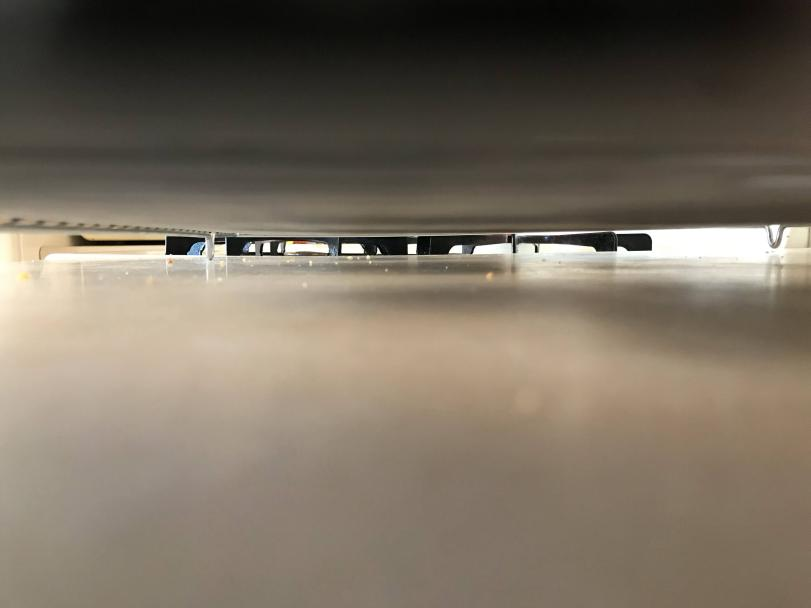 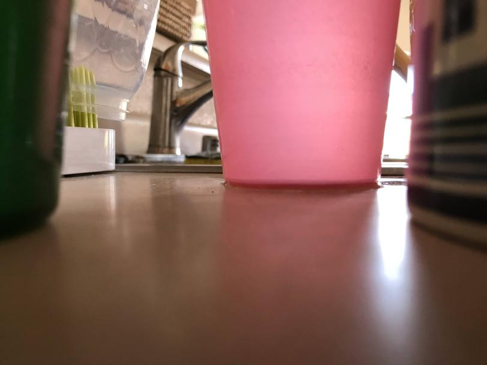 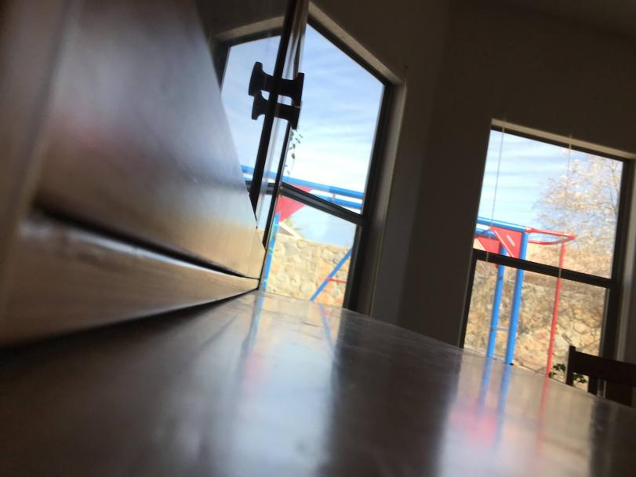 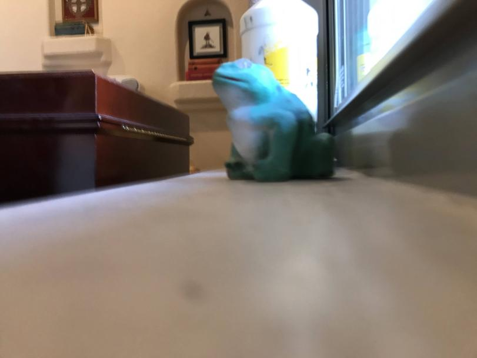Around the time that I started playing with this idea, my wife had bought me the Tiny Library, a deck of RPG games that could be played on a single wallet-sized card. I was in love with this idea that you could carry a full game around in your wallet or pocket, and I wanted to see if I could come up with enough "perspective" ideas to fill one card, and where players could choose one at random with, say, a dice roll.
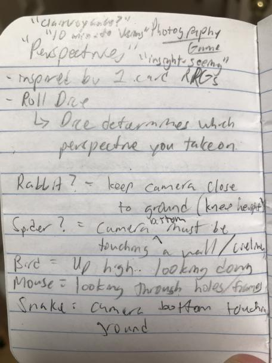After a bit of brainstorming, I ended up with 3 starting creatures I felt I could experiment with:
- Spider - camera body must be touching a surface
- Bird - look down at something from a high angle
- Mouse - look at something as if from a hiding place
Spider
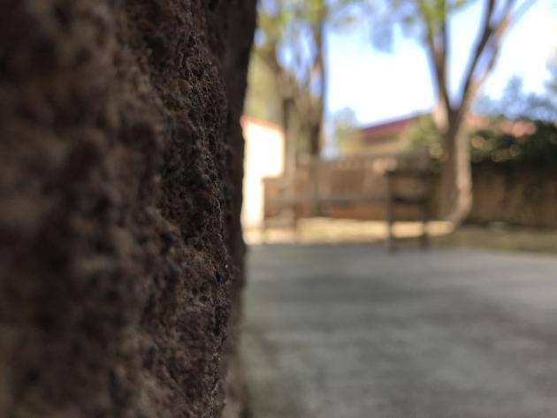 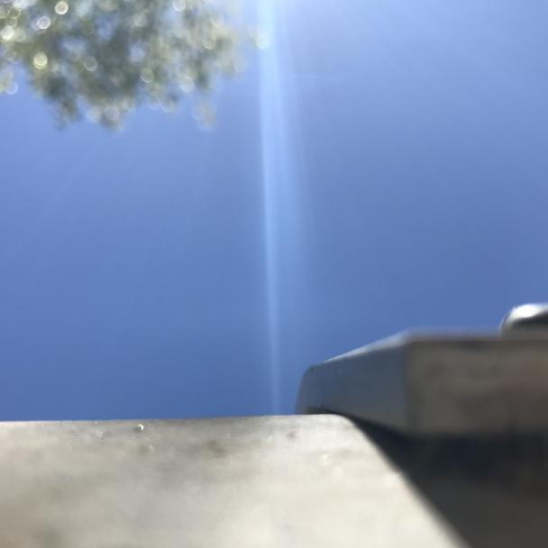 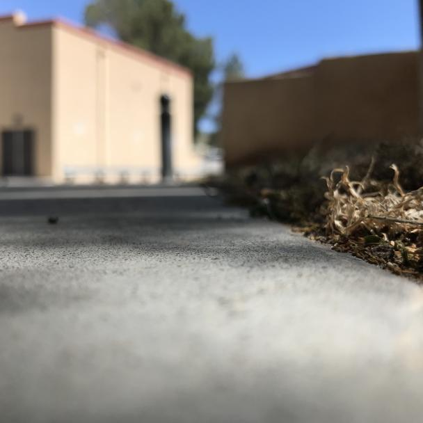 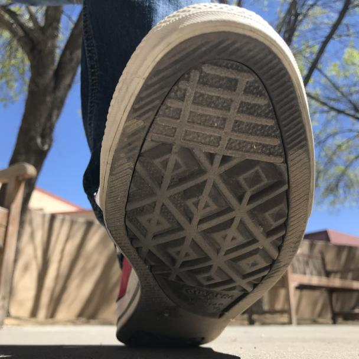 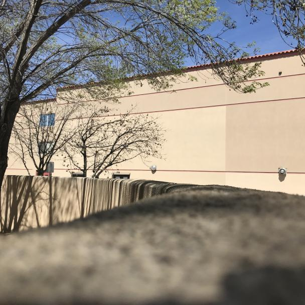(Some of the pictures were square because I accidentally changed the camera setting on my iphone and didnt notice.)
Mouse
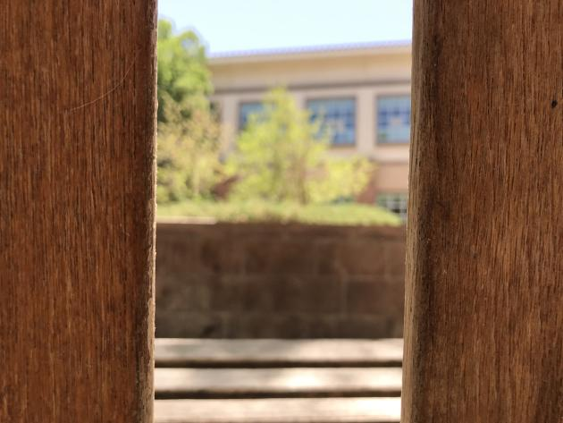 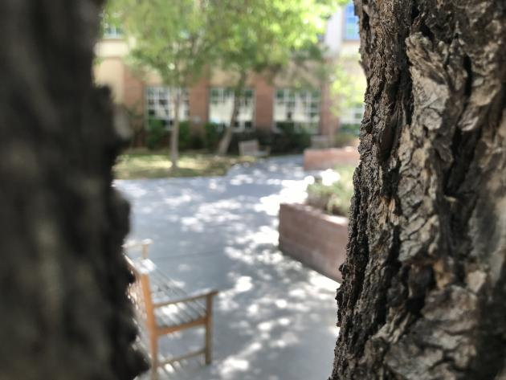 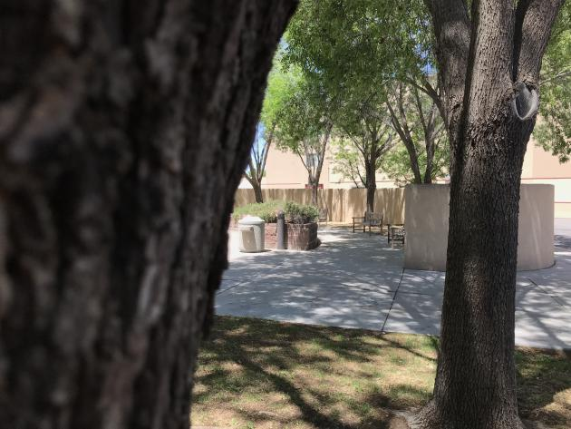 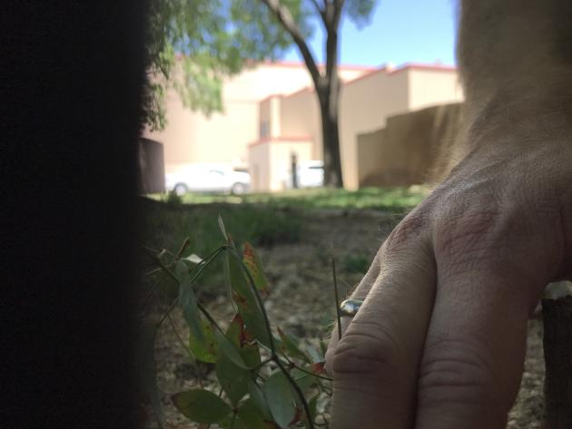 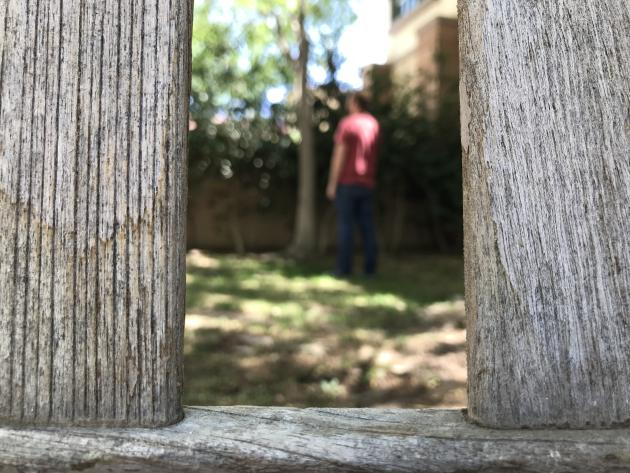And finally, Bird
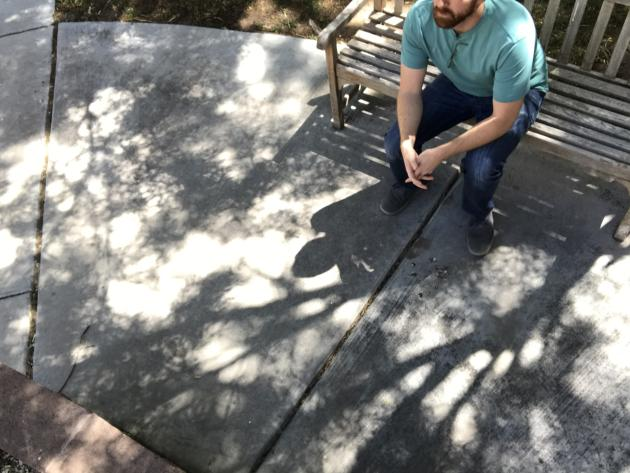 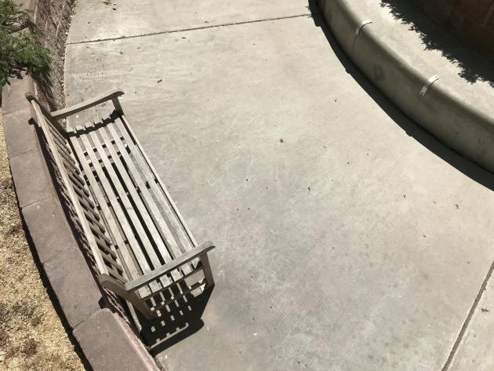 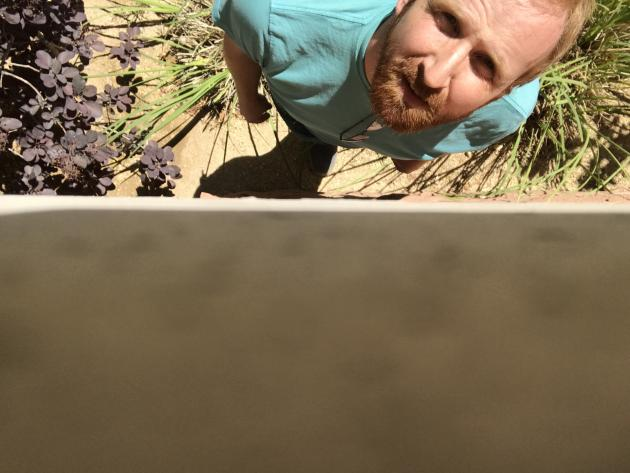 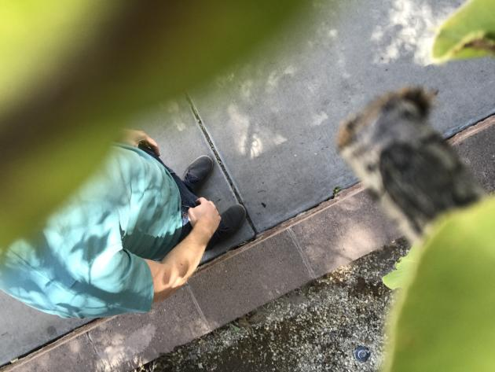I had a bit of fun and tried something a little different for the bird perspective, that ended up giving me one of my favorite self-portraits:
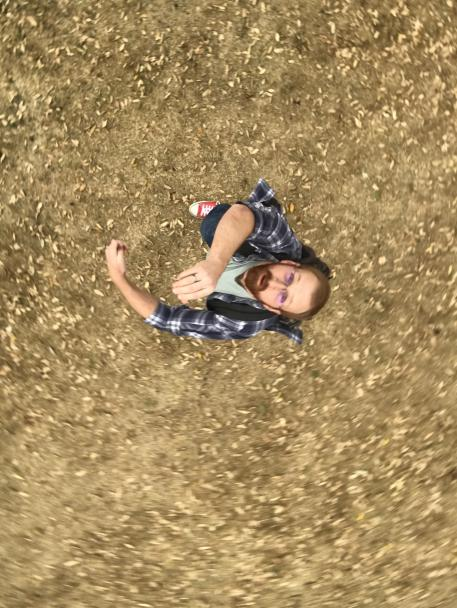Overall I really liked where this game was going at this point, and I was really happy with the perspective ideas I had tested out so far. My next task was to come up with a few more. After a bit of poking around online for inspiration, I had my next 3 to test:
- Bat - flip your camera (or your pics) upside down
- Goldfish - take pictures through an additional lens of some kind (glass window, a cup full of water, etc.)
- Flower - Take pictures laying flat on your back, looking up.
I returned to my usual lunchtime practice space to see what I could come up with:
Bat
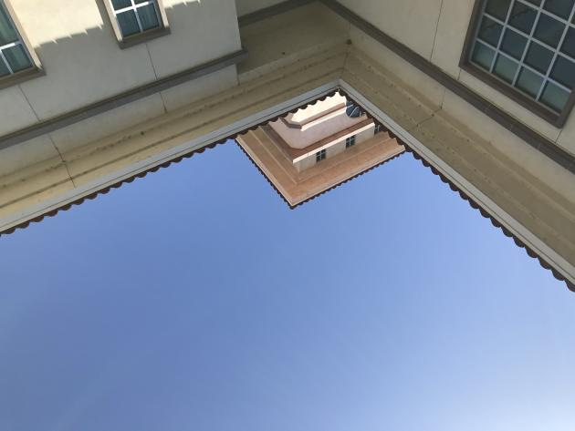 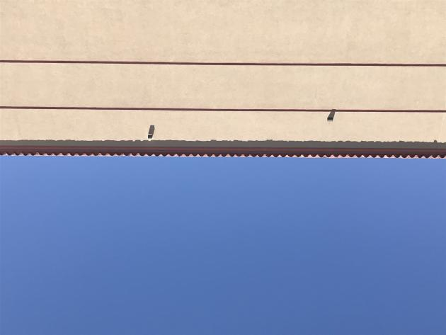 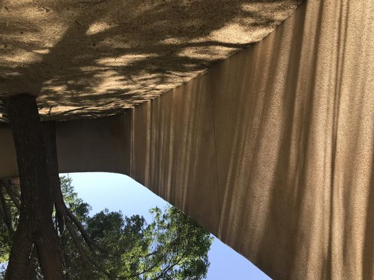 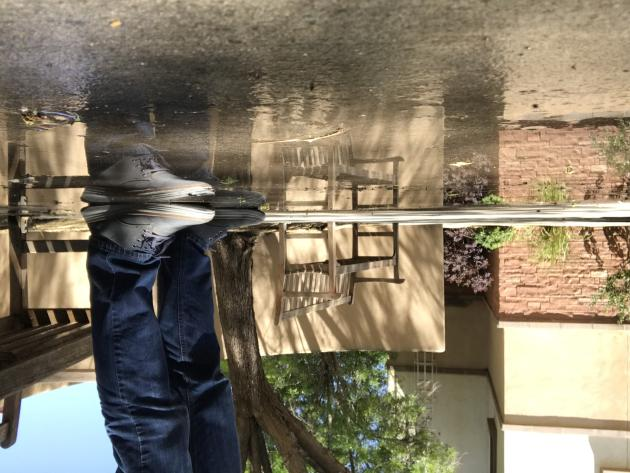Goldfish
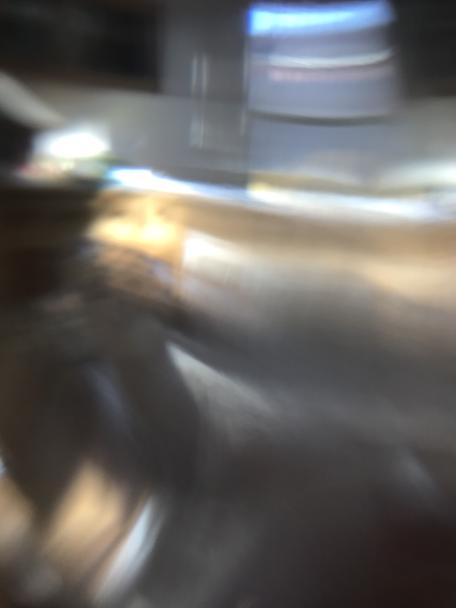 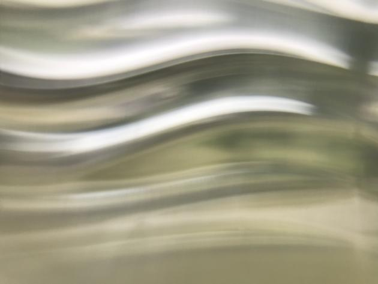 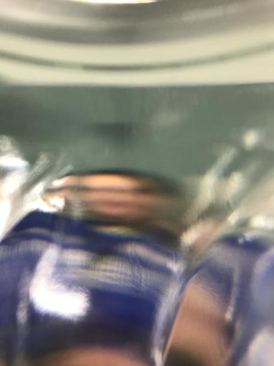 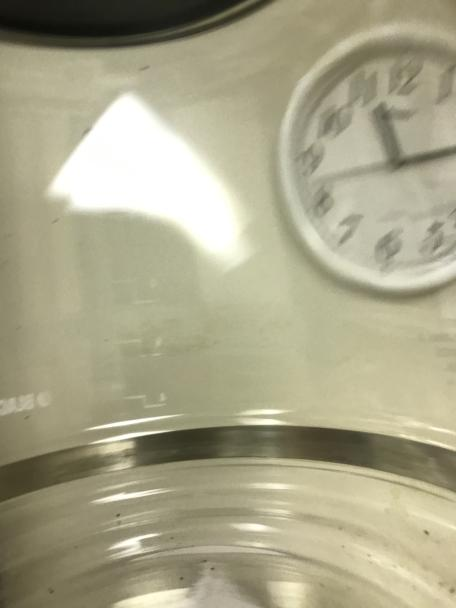Flower
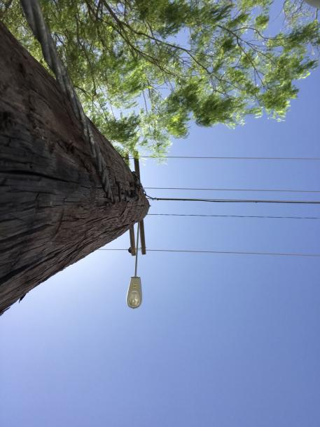 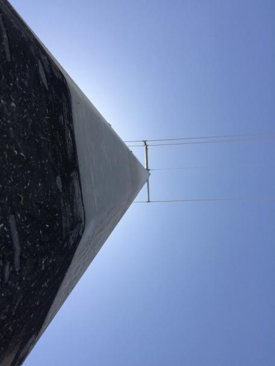 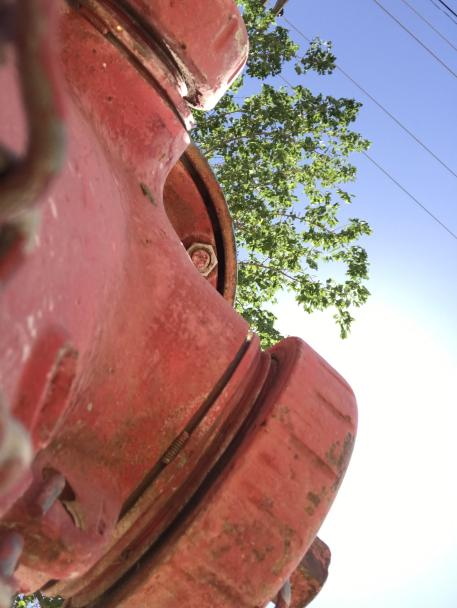 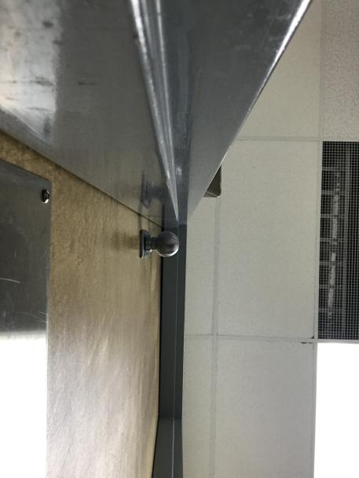By this point I felt I had enough material to start putting together a prototype webpage that would be relatively easy to use on your phone. It's crude, but the functionality is there:
jrcwest.github.io/perspectivesUpon sharing this prototype internally with some developers in Paradise, I got some pretty interesting suggestions for additional perspective ideas and design changes that I'm excited to explore. You may see them reflected in the prototype in the coming days as I continue to tinker with it, but I plan to dive more into those suggestions and changes in the next blog post.
-jwest